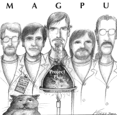

Friday January 26, 2001 Tahlequah, OK (CONFIRMED)
Saturday January 27, 2001 Stillwater, OK (CONFIRMED)
Thursday February 1, 2001 Dallas, TX (CONFIRMED)
(CANCELLED) Friday February 9, 2001 Dallas, TX (CANCELLED)
(CANCELLED) Saturday February 10, 2001 Austin, TX (CANCELLED)
Featured magpu mp3 show of the month:
Roxie's BBQ
H.C. 61
2 sets @ 10pm
Mike's College Bar
319 S. Washington St.
$3, 2 sets @ 10pm
Club Dada
2720 Elm St. (Deep Ellum) 214-744-DADA
8-10pm, Dexter Grove from Colorado @10:30pm
Muddy Waters
1518 Lower Greenville Ave. (214 823 1518)
opening for Schleigho
Lucy's Retired Surfers' Bar
219 E. 6th St.
opening for Schleigho
magpu @ The Aardvark - Fort Worth, TX 05/13/2000
Set 1:
Spread Too Thin,
Nug ->
Makisupa Policeman ->
Nug,
Cliffless Jam,
Dark Star ->
Star Wars Disco Theme ->
Third Way,
So Many Hats ->
Third Stone from the Sun ->
So Many Hats,
Wonder ->
Timber Ho!
Set 2:
Taco John ->
Psychogenic Reaction ->
Taco John,
King Tut,
Podamus ->
Rio->Podamus,
Spliff Jam,
Burrito Transplant Surgery,
Sweat,
Hungry Ears,
Tweezer ->
Sqrahd,
Seven-Legged Spider Scramble